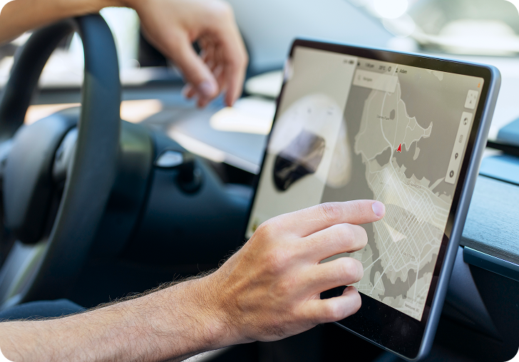
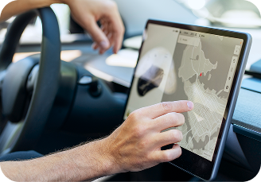
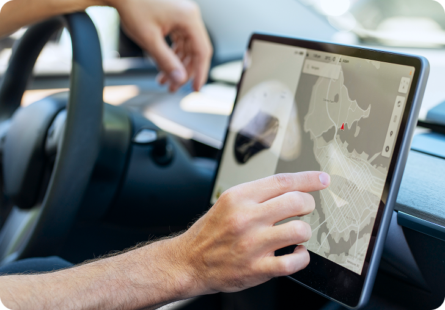
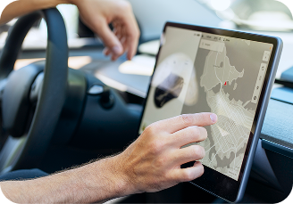
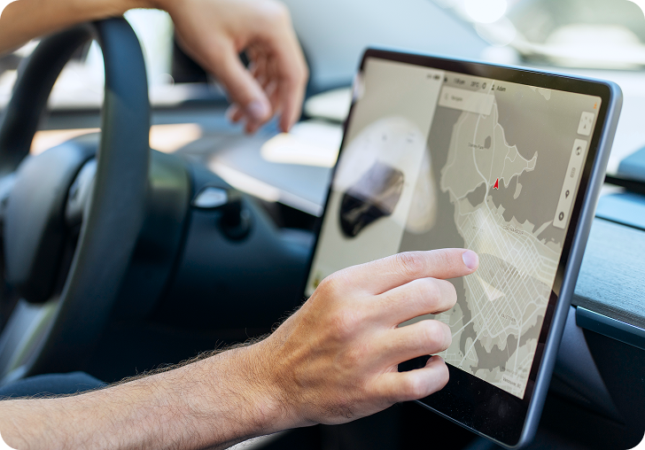
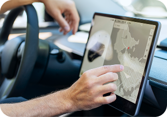
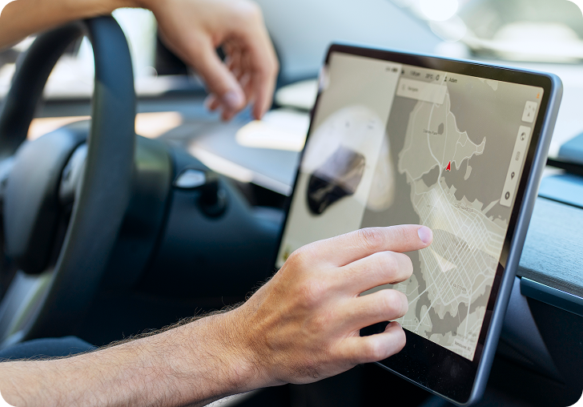
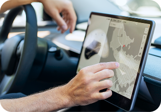

Оглавление
--- Виды стрелковых спортов
--- Как выбрать подходящий вид стрелкового спорта
--- Где можно практиковаться
--- Заключение
Виды грузоперевозок в России по сегментам
24.06.2025
 



 



Грузоперевозки — основа логистики и экономики России. Страна большая, климат разный, расстояния огромные — и под каждую задачу нужен свой подход. Кто-то везёт скоропорт, кто-то металл, кто-то — онлайн-заказы. И для всех нужны разные типы транспорта и решений.
Виды автомобильных перевозок
Грузоперевозки нужны, чтобы товары, оборудование, сырьё и материалы попадали туда, где они нужны — от заводов до магазинов, от складов до конечного покупателя. Без них невозможна работа ни одного бизнеса: ничего не произойдёт, не построится и не продастся, если это не будет доставлено вовремя. Грузоперевозки — это связующее звено между производством и потреблением, и от их качества зависит стабильность поставок, сроки и даже цена конечного продукта.
1.Автомобильные
2.Железнодорожные
3.Авиаперевозки
Железнодорожные перевозки
Когда это выгодно?
Железная дорога особенно эффективна на больших расстояниях — от 1000 км и выше. Она незаменима при доставке тяжёлых, объёмных и навалочных грузов: угля, леса, металла, стройматериалов и промышленных товаров.
Возможности
Железнодорожные перевозки можно комбинировать с другими видами транспорта: авто, морем, авиа. Это позволяет выстроить удобную логистику "от двери до двери", особенно при международных поставках и доставке в отдалённые регионы.
Что обычно перевозят?
Железнодорожным транспортом в России чаще всего перевозят сырьё и промышленные грузы: уголь, руду, лес, металл, зерно, стройматериалы и удобрения. Также активно используются контейнерные перевозки, особенно при доставке товаров из Китая и других стран. Поездами перевозят технику, оборудование, автомобили, а иногда и продукты, если сроки не критичны. Благодаря высокой грузоподъёмности и стабильности, железная дорога остаётся одним из ключевых каналов для доставки крупнотоннажных и массовых грузов на большие расстояния.
Как выбрать подходящий вид стрелкового спорта
Автоперевозки — это про скорость, контроль и свободу в логистике. Здесь важна каждая минута, и именно машина позволяет быть максимально точным в сроках
Автомобильные перевозки — самый гибкий и доступный способ доставки грузов по России. Они подходят как для коротких, так и для межрегиональных маршрутов, позволяют доставлять грузы напрямую "от двери до двери" и оперативно менять маршрут при необходимости. Особенно востребованы автоперевозки в торговле, строительстве и e-commerce, где важны скорость и точность. Благодаря широкой сети дорог и большому выбору транспорта — от газелей до фур — можно перевозить всё: от небольших партий товаров до крупногабаритной техники.
Где и каким способом чаще всего перевозят грузы?
Россия
— Железнодорожные перевозки — ключевой способ для доставки тяжёлых и массовых грузов на большие расстояния по стране.
— Автомобильные перевозки — широко применяются для региональной и городской логистики, доставки "от двери до двери".
— Морские перевозки — важны для международной торговли и грузов в прибрежных регионах.
Китай
— Железнодорожные перевозки — активно развиваются для международной логистики, например, по "Новой шелковой дороге".
— Морские перевозки — крупнейший мировой игрок в контейнерных морских перевозках.
— Авиаперевозки — быстро растущий сегмент для электронной коммерции.
Заключение
В странах СНГ транспортировка грузов строится с учётом особенностей географии и инфраструктуры каждой страны. Железнодорожные перевозки остаются основой для крупных и дальних маршрутов, особенно в России и Казахстане, тогда как автомобильный транспорт доминирует в региональных и внутренних доставках. Морские перевозки играют важную роль в прибрежных государствах с доступом к морю, а авиаперевозки востребованы для срочных и ценных грузов по всему региону. Грамотный выбор вида транспорта помогает оптимизировать логистику, снизить расходы и обеспечить своевременную доставку товаров.